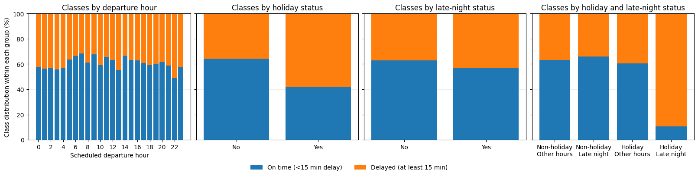
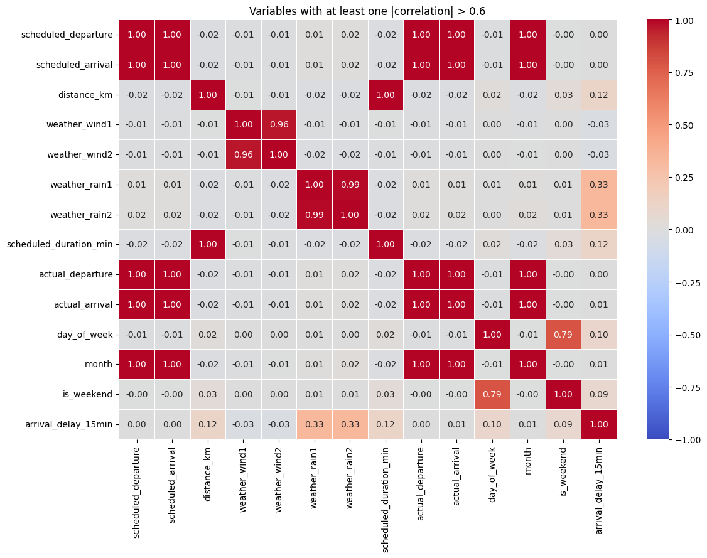
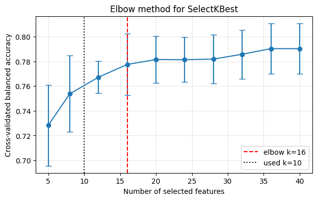
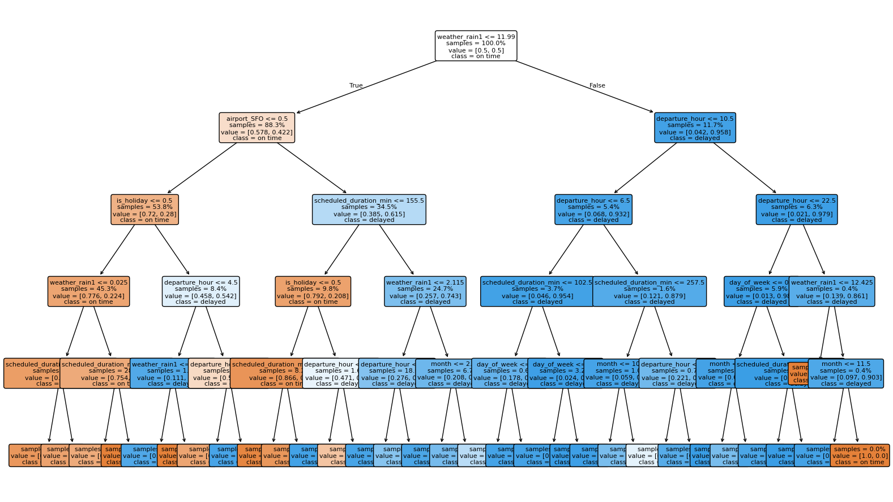
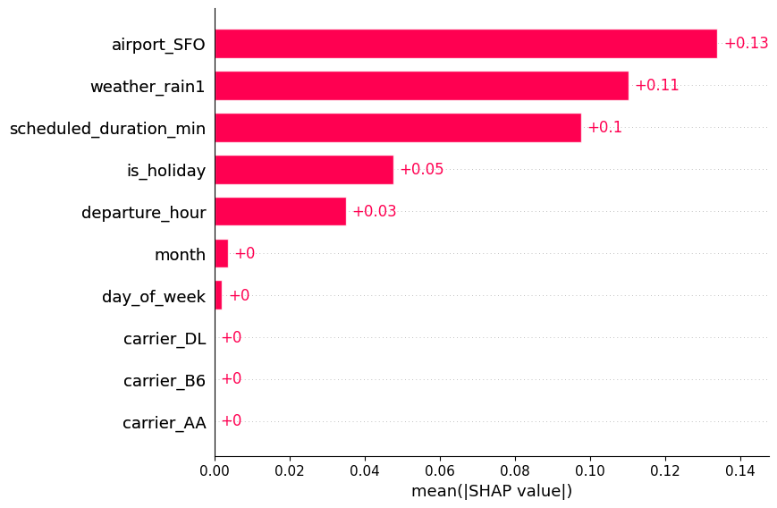
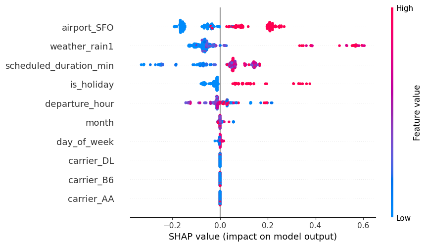
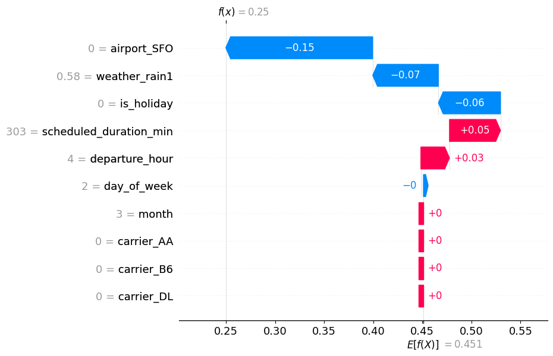

| scheduled_departure | scheduled_arrival | carrier | origin | destination | distance_km | weather_wind1 | weather_wind2 | weather_rain1 | weather_rain2 | noise_1 | noise_2 | noise_3 | scheduled_duration_min | actual_departure | actual_arrival | |
|---|---|---|---|---|---|---|---|---|---|---|---|---|---|---|---|---|
| 0 | 2025-02-02 04:15:00 | 2025-02-02 06:03:00 | UA | ATL | SFO | 918 | 4.76 | 5.09 | 0.56 | 0.00 | 0.4405 | 0.2071 | 83 | 108 | 2025-02-02 04:39:00 | 2025-02-02 06:45:00 |
| 1 | 2025-10-10 00:10:00 | 2025-10-10 03:11:00 | AA | JFK | LAX | 1826 | 26.43 | 26.82 | 0.84 | 0.00 | 1.8638 | 0.7937 | 27 | 181 | 2025-10-10 00:06:00 | 2025-10-10 03:10:00 |
| 2 | 2025-08-27 15:30:00 | 2025-08-27 19:18:00 | B6 | JFK | BOS | 2409 | 2.80 | 0.83 | 13.91 | 12.32 | 1.1118 | -0.6341 | 29 | 228 | 2025-08-27 16:23:00 | 2025-08-27 20:40:00 |
From Domain Features to Automated Feature Selection
Data-Centric AI (Module II)
Matteo Francia
DISI — University of Bologna
m.francia@unibo.it
DISI — University of Bologna
m.francia@unibo.it

Learning outcomes
By the end of this notebook, you should be able to:
- Create reproducible manual features.
- Integrate feature construction into a pipeline.
- Distinguish feature engineering from feature selection.
- Compare filter and wrapper selection methods.
- Evaluate predictive performance, stability, and computational cost.
- Interpret global importance and local SHAP contributions.
- Build and defend a complete feature engineering and selection workflow.
1. Feature engineering versus feature selection
Feature engineering introduces hypotheses about the problem by creating candidate inputs for a model.
- It turns domain knowledge into measurable variables: ratios, differences, nonlinear transformations, and aggregations.
Feature selection controls complexityby choosing a subset of candidate inputs.
- It tries to keep signal while removing redundancy, noise, and sources of overfitting.
A useful feature usually has at least one of these properties:
- It carries signal about the target.
- It is not just a duplicate of another feature.
- It is stable across samples, folds, and time periods.
- It is available at the moment the model is used.
- It does not encode the answer through leakage.
2. Flight delay prediction
Use this dataset to predict whether a flight arrives at least 15 minutes late.
3. Data understanding
<class 'pandas.DataFrame'>
RangeIndex: 5000 entries, 0 to 4999
Data columns (total 16 columns):
# Column Non-Null Count Dtype
--- ------ -------------- -----
0 scheduled_departure 5000 non-null datetime64[us]
1 scheduled_arrival 5000 non-null datetime64[us]
2 carrier 5000 non-null str
3 origin 5000 non-null str
4 destination 5000 non-null str
5 distance_km 5000 non-null int64
6 weather_wind1 5000 non-null float64
7 weather_wind2 5000 non-null float64
8 weather_rain1 5000 non-null float64
9 weather_rain2 5000 non-null float64
10 noise_1 5000 non-null float64
11 noise_2 5000 non-null float64
12 noise_3 5000 non-null int64
13 scheduled_duration_min 5000 non-null int64
14 actual_departure 5000 non-null datetime64[us]
15 actual_arrival 5000 non-null datetime64[us]
dtypes: datetime64[us](4), float64(6), int64(3), str(3)
memory usage: 625.1 KB4. Data understanding
5. Manual feature engineering
Create domain-inspired features from raw columns to encode hypotheses and help the model:
departure_hour,day_of_week,month,is_holiday: scheduled date/time decomposition.airport_*: fixed airport-presence indicators for airports appearing in either origin or destination.- Other?
Are features known at prediction time?
| feature | dtype | source | availability | |
|---|---|---|---|---|
| 0 | scheduled_departure | datetime64[us] | raw | before departure |
| 1 | scheduled_arrival | datetime64[us] | raw | before departure |
| 2 | carrier | str | raw | before departure |
| 3 | origin | str | raw | before departure |
| 4 | destination | str | raw | before departure |
| 5 | distance_km | int64 | raw | before departure |
| 6 | weather_wind1 | float64 | raw | before departure |
| 7 | weather_wind2 | float64 | raw | before departure |
| 8 | weather_rain1 | float64 | raw | before departure |
| 9 | weather_rain2 | float64 | raw | before departure |
| 10 | noise_1 | float64 | raw | before departure |
| 11 | noise_2 | float64 | raw | before departure |
| 12 | noise_3 | int64 | raw | before departure |
| 13 | scheduled_duration_min | int64 | raw | before departure |
| 14 | actual_departure | datetime64[us] | raw | after departure |
| 15 | actual_arrival | datetime64[us] | raw | after arrival |
Are features known at prediction time?
| feature | dtype | source | availability | |
|---|---|---|---|---|
| 21 | departure_hour | int32 | engineered | before departure |
| 22 | day_of_week | int32 | engineered | before departure |
| 23 | month | int32 | engineered | before departure |
| 24 | is_weekend | int64 | engineered | before departure |
| 25 | is_holiday | int64 | engineered | before departure |
| 26 | airport_ATL | int64 | engineered | before departure |
| 27 | airport_BOS | int64 | engineered | before departure |
| 28 | airport_JFK | int64 | engineered | before departure |
| 29 | airport_LAX | int64 | engineered | before departure |
| 30 | airport_SFO | int64 | engineered | before departure |
| 16 | actual_departure_hour | int32 | engineered | after departure |
| 18 | actual_departure_delay_min | float64 | engineered | after departure |
| 17 | actual_arrival_hour | int32 | engineered | after arrival |
| 19 | actual_arrival_delay_min | float64 | engineered | after arrival |
| 20 | actual_elapsed_min | float64 | engineered | after arrival |
Data understanding and visualization

Data understanding and visualization

6. Pipeline generation
Pipeline(steps=[('feature_engineering',
FlightFeatureEngineer(add_manual_features=False)),
('preprocessing',
ColumnTransformer(transformers=[('num',
Pipeline(steps=[('variance',
VarianceThreshold())]),
<function numeric_columns at 0x7e038979d2d0>),
('cat',
OneHotEncoder(handle_unknown='ignore',
sparse_output=False),
<function categorical_columns at 0x7e0389d45170>)],
verbose_feature_names_out=False)),
('classifier',
DecisionTreeClassifier(class_weight='balanced', max_depth=5,
random_state=42))])In a Jupyter environment, please rerun this cell to show the HTML representation or trust the notebook. On GitHub, the HTML representation is unable to render, please try loading this page with nbviewer.org.
Parameters
Parameters
| add_manual_features | False | |
| include_actual_times | False | |
| drop_datetime | True |
Parameters
<function numeric_columns at 0x7e038979d2d0>
<function categorical_columns at 0x7e0389d45170>
Parameters
Parameters
7. Actual departure and arrival times: keep or drop?
Prediction time matters:
- Ticket sale: route, carrier, scheduled times, and planned distance/duration.
- Morning of travel: forecasts and known schedule pressure.
- Gate before departure: current weather and operational status that is already known.
- After departure: actual departure time and departure delay may be inferred.
- After landing: actual arrival time and arrival delay are known.
| experiment | balanced_accuracy_mean | f1_mean | |
|---|---|---|---|
| 0 | Raw data - no feature engineering | 0.757657 | 0.702503 |
| 1 | Feature engineering | 0.790393 | 0.745900 |
| 2 | Leaky feature engineering | 1.000000 | 1.000000 |
8. Automated feature selection

Filter Methods
Filter methods rank features using a statistical criterion independent of the final model.
- Filter methods are usually faster. Why?
- We use mutual information with
SelectKBest.
8. Automated feature selection

Wrapper Methods
Wrapper methods search for a subset by repeatedly fitting a model.
- Wrapper methods can capture model-specific usefulness, but they are more computationally expensive. Why?
- Here we use
SequentialFeatureSelectorandRFE.
Filter: SelectKBest
SelectKBest sorts features by the score returned by score_func and keeps the top k.
- Each feature is scored one at a time. I.e., it can miss features that are useful only together, and it may keep redundant features. Why?
- With
mutual_info_classif, select the features with the highest estimated Mutual Information with the class label.- MI is non-negative: 0 means the feature and target are almost independent; a larger score means the feature reduces uncertainty about the label.
- This does not mean the selected features are causal.
- It only means they had the largest training-fold association with
yaccording to the mutual-information estimator.
We still need to choose k. Elbow method: evaluate several values of k and choose the point after which extra features give diminishing returns.
| k | balanced_accuracy_mean | balanced_accuracy_std | elbow_score | |
|---|---|---|---|---|
| 0 | 5 | 0.728 | 0.033 | 0.000 |
| 1 | 8 | 0.754 | 0.031 | 0.230 |
| 2 | 12 | 0.767 | 0.013 | 0.303 |
| 3 | 16 | 0.778 | 0.025 | 0.339 |
| 4 | 20 | 0.782 | 0.019 | 0.304 |
| 5 | 24 | 0.781 | 0.018 | 0.221 |
| 6 | 28 | 0.782 | 0.020 | 0.146 |
| 7 | 32 | 0.786 | 0.020 | 0.110 |
| 8 | 36 | 0.790 | 0.021 | 0.081 |
| 9 | 40 | 0.790 | 0.021 | 0.000 |
Wrapper: SequentialFeatureSelector
Forward-SFS is a greedy procedure that iteratively finds the best new feature to add to the set of selected features.
- Start with zero features and find the one feature that maximizes a cross-validated score when an estimator is trained on this single feature.
- Once that first feature is selected, repeat the procedure by adding a new feature to the set of selected features.
- Stop when the desired number of selected features is reached.
Backward-SFS follows the same idea but works in the opposite direction.
- It starts with all features and removes one feature at a time. -In sklearn this is obtained with
SequentialFeatureSelector(direction="backward").
Wrapper: RFE
Given an external estimator that assigns weights to features (e.g., the coefficients of a linear model), recursive feature elimination (RFE) selects features by recursively considering smaller and smaller sets of features.
- First, the estimator is trained on the initial set of features and the importance of each feature is obtained either through any specific attribute (such as coef_, feature_importances_).
- Then, the least important features are pruned from the current set of features.
- That procedure is recursively repeated on the pruned set until the desired number of features to select is eventually reached.
RFE vs backward SequentialFeatureSelector: both methods remove features until the desired subset size is reached.
- RFE fits the estimator and removes the least important features according to the estimator’s internal importance signal. With logistic regression, this usually means small coefficient magnitudes; with trees, it may mean feature importances.
- asks which feature does the fitted model currently consider weakest?
- Backward
SequentialFeatureSelectortries candidate removals and evaluates the resulting model with a scoring metric, here balanced accuracy. At each step, it removes the feature whose removal gives the best cross-validated score, or hurts the score least.- asks which feature can I remove while preserving validation performance?
- RFE is usually faster; backward SFS is usually more expensive but more directly tied to the chosen evaluation metric.
9. Compare raw, engineered, and selected feature sets
| experiment | balanced_accuracy_mean | balanced_accuracy_std | f1_mean | f1_std | selection_stability_jaccard | features_mean | features_std | fit_time_total_sec | |
|---|---|---|---|---|---|---|---|---|---|
| 2 | fe + wrapper (SFS) | 0.790669 | 0.020160 | 0.746013 | 0.024517 | 0.423168 | 10.0 | 0.0 | 17.786336 |
| 1 | fe | 0.790393 | 0.020539 | 0.745900 | 0.024867 | NaN | 34.0 | 0.0 | 0.206249 |
| 4 | fe + wrapper (RFE) | 0.790139 | 0.019587 | 0.745617 | 0.023693 | 0.760606 | 10.0 | 0.0 | 0.394880 |
| 3 | fe + filter (SelectKBest) | 0.763695 | 0.014702 | 0.716002 | 0.016303 | 0.455311 | 10.0 | 0.0 | 1.101569 |
| 0 | raw | 0.757657 | 0.021914 | 0.702503 | 0.027969 | NaN | 24.0 | 0.0 | 0.157311 |
10. Selection stability across folds
A selector is more trustworthy when it keeps similar features across folds.
- Instability does not always mean the selector is wrong: correlated features may be interchangeable.
- But instability should make us cautious when interpreting selected variables as domain truth.
Stability is an interpretation check: selected features that change across folds should be discussed cautiously.
| experiment | mean_jaccard_similarity | example_selected_features | |
|---|---|---|---|
| 2 | fe + wrapper (RFE) | 0.760606 | [airport_SFO, departure_hour, distance_km, is_... |
| 1 | fe + filter (SelectKBest) | 0.455311 | [airport_LAX, airport_SFO, carrier_AA, destina... |
| 0 | fe + wrapper (SFS) | 0.423168 | [airport_ATL, airport_JFK, airport_SFO, carrie... |
11. Performance versus number of features
A useful visualization is a performance-versus-number-of-features curve.
- We already used this curve to select
kwith the elbow method. - A good choice is not necessarily the highest possible balanced accuracy: we may prefer a smaller model when the performance loss is negligible.
- The vertical line marks the selected elbow value.

12. Interpretability check
Fit a fresh pipeline on a stratified training split and inspect its validation predictions.
- Learn feature engineering, encoding, and selection on the training split only.
- Reuse this fitted model and validation split for tree, permutation, and SHAP explanations.
- Earlier cross-validation explored the full synthetic dataset: this split is an interpretation demonstration, not an independent final test of the chosen strategy.
Code
X_interpret_train, X_interpret_valid, y_interpret_train, y_interpret_valid = train_test_split(
X, y, test_size=0.30, stratify=y, random_state=RANDOM_STATE,
)
chosen_pipeline = make_pipeline(add_manual_features=True, selector=sfs_selector)
chosen_pipeline.fit(X_interpret_train, y_interpret_train)
selected_feature_names_for_tree = selected_feature_names_ordered(chosen_pipeline)
tree = chosen_pipeline.named_steps["classifier"]
print("Validation balanced accuracy:", round(balanced_accuracy_score(
y_interpret_valid, chosen_pipeline.predict(X_interpret_valid)
), 3))
pd.DataFrame({"selected_feature": selected_feature_names_for_tree})Validation balanced accuracy: 0.781| selected_feature | |
|---|---|
| 0 | weather_rain1 |
| 1 | scheduled_duration_min |
| 2 | departure_hour |
| 3 | day_of_week |
| 4 | month |
| 5 | is_holiday |
| 6 | airport_SFO |
| 7 | carrier_AA |
| 8 | carrier_B6 |
| 9 | carrier_DL |
Plotting the tree

Checking tree feature importance
Code
| feature | importance | |
|---|---|---|
| 0 | weather_rain1 | 0.360293 |
| 1 | airport_SFO | 0.230127 |
| 2 | scheduled_duration_min | 0.192780 |
| 3 | departure_hour | 0.117603 |
| 4 | is_holiday | 0.090734 |
| 5 | month | 0.006337 |
| 6 | day_of_week | 0.002127 |
| 7 | carrier_AA | 0.000000 |
| 8 | carrier_B6 | 0.000000 |
| 9 | carrier_DL | 0.000000 |
13. Permutation importance
How much does validation balanced accuracy fall when we shuffle one feature?
- Positive values indicate that shuffling hurts the score; values near zero indicate little measured effect.
- Correlated alternatives can hide each other’s importance.
- Here we permute the transformed columns seen by the tree, including individual one-hot columns.
| tree_feature | importance_mean | importance_std | |
|---|---|---|---|
| 6 | airport_SFO | 0.144290 | 0.010628 |
| 0 | weather_rain1 | 0.093272 | 0.004167 |
| 1 | scheduled_duration_min | 0.068476 | 0.005601 |
| 5 | is_holiday | 0.038750 | 0.003133 |
| 2 | departure_hour | 0.026934 | 0.003683 |
| 3 | day_of_week | 0.000000 | 0.000000 |
| 8 | carrier_B6 | 0.000000 | 0.000000 |
| 7 | carrier_AA | 0.000000 | 0.000000 |
| 9 | carrier_DL | 0.000000 | 0.000000 |
| 4 | month | -0.001525 | 0.000339 |
14. SHAP: the contribution of each feature
Permutation importance measures the change in a score. SHAP attributes a prediction to its input features.
For the delayed class (y=1), we explain the model’s probability:
\[\hat{P}(y=1 \mid x) = \text{base value} + \sum_{j=1}^{p} \phi_j(x).\]
- Positive contributions raise the prediction above the baseline; negative contributions lower it.
- Contributions here are in probability units:
+0.08means +8 percentage points. - These explain the fitted model, not causal effects. With class weighting, its probabilities need not be calibrated.
We use SHAP TreeExplainer with a training background and explicitly request probability output.
Code
# Keep selected features in the exact order used by the tree.
# Use training rows as the background and explain validation rows only.
background = X_tree_train.sample(n=min(100, len(X_tree_train)), random_state=RANDOM_STATE)
X_explain = X_tree_valid.sample(n=min(300, len(X_tree_valid)), random_state=RANDOM_STATE)
explainer = shap.TreeExplainer(
tree,
data=background,
feature_names=selected_feature_names_for_tree,
feature_perturbation="interventional",
model_output="probability",
)
all_class_shap = explainer(X_explain)
delayed_class_index = int(np.flatnonzero(tree.classes_ == 1)[0])
shap_delayed = all_class_shap[:, :, delayed_class_index]
# Check that all contributions reconstruct each prediction.
delayed_probability = tree.predict_proba(X_explain.to_numpy())[:, delayed_class_index]
np.testing.assert_allclose(
shap_delayed.base_values + shap_delayed.values.sum(axis=1),
delayed_probability, atol=1e-6,
)
print(f"Explained {len(X_explain)} validation flights and {X_explain.shape[1]} selected features.")Explained 300 validation flights and 10 selected features.Global SHAP contributions
Mean absolute SHAP values rank how much each feature moves predictions across the explained flights. The signed mean can cancel out positive and negative contributions.
These are selected, transformed features. Removed features are absent; a retained feature unused by the tree has zero contribution.
Code
# Show every selected feature, including zero contributions.
shap_importance = pd.DataFrame({
"tree_feature": selected_feature_names_for_tree,
"mean_abs_shap": np.abs(shap_delayed.values).mean(axis=0),
"mean_signed_shap": shap_delayed.values.mean(axis=0),
}).sort_values("mean_abs_shap", ascending=False)
display(shap_importance.round(4))
shap.plots.bar(shap_delayed, max_display=len(selected_feature_names_for_tree))| tree_feature | mean_abs_shap | mean_signed_shap | |
|---|---|---|---|
| 6 | airport_SFO | 0.1338 | -0.0067 |
| 0 | weather_rain1 | 0.1102 | -0.0146 |
| 1 | scheduled_duration_min | 0.0975 | 0.0181 |
| 5 | is_holiday | 0.0475 | 0.0010 |
| 2 | departure_hour | 0.0349 | -0.0003 |
| 4 | month | 0.0035 | 0.0012 |
| 3 | day_of_week | 0.0020 | -0.0008 |
| 7 | carrier_AA | 0.0000 | 0.0000 |
| 8 | carrier_B6 | 0.0000 | 0.0000 |
| 9 | carrier_DL | 0.0000 | 0.0000 |

Direction and variation across flights
In the beeswarm plot, each dot is a flight. Its horizontal position is the signed contribution; color indicates the feature value. Compare wind or rain sensors when selected: correlated inputs can share credit, and the background assumption affects this allocation.

Local SHAP contributions: explain one flight
Read the waterfall from the base value to the model prediction. The table lists the value and signed contribution of every selected feature for the same flight.
Code
flight_position = 0 # Change this to inspect another validation flight.
flight_explanation = shap_delayed[flight_position]
local_contributions = pd.DataFrame({
"tree_feature": selected_feature_names_for_tree,
"feature_value": X_explain.iloc[flight_position].to_numpy(),
"shap_contribution": flight_explanation.values,
})
local_contributions["contribution_percentage_points"] = 100 * local_contributions["shap_contribution"]
local_contributions = local_contributions.iloc[
np.argsort(-np.abs(local_contributions["shap_contribution"].to_numpy()))
]
display(local_contributions.round(4))
display(pd.DataFrame([{
"flight_index": X_explain.index[flight_position],
"base_probability": float(flight_explanation.base_values),
"sum_of_contributions": float(flight_explanation.values.sum()),
"reconstructed_probability": float(flight_explanation.base_values + flight_explanation.values.sum()),
"predicted_probability": delayed_probability[flight_position],
}]))
shap.plots.waterfall(flight_explanation, max_display=len(selected_feature_names_for_tree))| tree_feature | feature_value | shap_contribution | contribution_percentage_points | |
|---|---|---|---|---|
| 6 | airport_SFO | 0.00 | -0.1496 | -14.9640 |
| 0 | weather_rain1 | 0.58 | -0.0669 | -6.6914 |
| 5 | is_holiday | 0.00 | -0.0633 | -6.3262 |
| 1 | scheduled_duration_min | 303.00 | 0.0520 | 5.1966 |
| 2 | departure_hour | 4.00 | 0.0291 | 2.9145 |
| 3 | day_of_week | 2.00 | -0.0026 | -0.2606 |
| 4 | month | 3.00 | 0.0000 | 0.0000 |
| 7 | carrier_AA | 0.00 | 0.0000 | 0.0000 |
| 8 | carrier_B6 | 0.00 | 0.0000 | 0.0000 |
| 9 | carrier_DL | 0.00 | 0.0000 | 0.0000 |
| flight_index | base_probability | sum_of_contributions | reconstructed_probability | predicted_probability | |
|---|---|---|---|---|---|
| 0 | 3701 | 0.451106 | -0.20131 | 0.249797 | 0.249797 |

Compare permutation importance and SHAP
The units differ: score decrease versus probability contribution magnitude. Compare rankings, not numerical sizes. Neither method establishes causality or guarantees that removing a feature will preserve performance.
Code
importance_comparison = importance_table.merge(shap_importance, on="tree_feature")
importance_comparison["permutation_rank"] = importance_comparison["importance_mean"].rank(ascending=False, method="min")
importance_comparison["shap_rank"] = importance_comparison["mean_abs_shap"].rank(ascending=False, method="min")
importance_comparison.sort_values("shap_rank").round(4)| tree_feature | importance_mean | importance_std | mean_abs_shap | mean_signed_shap | permutation_rank | shap_rank | |
|---|---|---|---|---|---|---|---|
| 0 | airport_SFO | 0.1443 | 0.0106 | 0.1338 | -0.0067 | 1.0 | 1.0 |
| 1 | weather_rain1 | 0.0933 | 0.0042 | 0.1102 | -0.0146 | 2.0 | 2.0 |
| 2 | scheduled_duration_min | 0.0685 | 0.0056 | 0.0975 | 0.0181 | 3.0 | 3.0 |
| 3 | is_holiday | 0.0388 | 0.0031 | 0.0475 | 0.0010 | 4.0 | 4.0 |
| 4 | departure_hour | 0.0269 | 0.0037 | 0.0349 | -0.0003 | 5.0 | 5.0 |
| 9 | month | -0.0015 | 0.0003 | 0.0035 | 0.0012 | 10.0 | 6.0 |
| 5 | day_of_week | 0.0000 | 0.0000 | 0.0020 | -0.0008 | 6.0 | 7.0 |
| 6 | carrier_B6 | 0.0000 | 0.0000 | 0.0000 | 0.0000 | 6.0 | 8.0 |
| 7 | carrier_AA | 0.0000 | 0.0000 | 0.0000 | 0.0000 | 6.0 | 8.0 |
| 8 | carrier_DL | 0.0000 | 0.0000 | 0.0000 | 0.0000 | 6.0 | 8.0 |
15. Guided exercises: from features to explanations
Follow the augmentation lab’s pattern: complete each code cell, compare results, and answer the questions.
Exercise 1: define prediction time and split the data
Predict delay before departure, assuming the weather measurements are available then.
- Copy
XandyintoX_exerciseandy_exercise. - Remove actual departure and arrival timestamps explicitly.
- Reserve a stratified 20% test set with
random_state=RANDOM_STATE. - Use only the remaining training data for cross-validation and design choices. Keep the test set untouched until Exercise 7.
Questions: which other variables reveal the answer? Why can high correlation with the target be a warning?
Exercise 2: build a baseline
- Create
make_pipeline(add_manual_features=False). - Evaluate it on the exercise training data using
cross_validate,cv, andscoring. - Record mean and standard deviation of balanced accuracy and F1, output feature count, and fit time.
Questions: why use balanced accuracy? Why must encoding be fitted inside each fold?
Exercise 3: engineer domain features
- Subclass
FlightFeatureEngineerand overridetransform, starting fromsuper().transform(X). - Add at least three features, such as
is_late_night,high_precipitation, and an interaction withis_holiday. - Replace the
feature_engineeringstep of a fresh pipeline with your transformer. Keepinclude_actual_times=False. - Evaluate with exactly the same folds and metrics as the baseline.
Questions: which features express a useful hypothesis? Does an interaction help a shallow tree? Do not recreate the hidden random visibility indicator from the data generator.
Exercise 4: compare filter and wrapper selection
- Compare no selection,
SelectKBest,RFE, and forwardSequentialFeatureSelectorafter your transformer. - Try at least two valid subset sizes, for example 5 and 10. Use
cv=3inside SFS to control runtime. - Use
return_estimator=Trueto recover feature names per fold. - Build a table with score mean/std, feature count, fit time, and mean Jaccard similarity.
- Choose a strategy using training cross-validation only and justify its trade-offs.
Questions: do similar scores imply similar selected features? What happens when the two rain sensors are interchangeable?
Exercise 5: measure permutation importance
- Split the exercise training data into stratified subtraining and validation sets.
- Fit your chosen configuration on subtraining only.
- Use
tree_input_frameto transform validation data with the fitted steps. - Compute permutation importance with balanced accuracy and at least 10 repeats.
- Plot the score decrease and its standard deviation for every selected feature.
Questions: are any importances negative or near zero? Why does this alone not justify dropping a correlated feature?
Exercise 6: explain each feature with SHAP
- Use transformed subtraining rows as a background for
TreeExplainerand explain validation rows. - Select the output corresponding to class
1usingclasses_. - Show a global bar plot, a beeswarm plot, and a table of mean absolute contributions.
- Explain one high-probability and one low-probability flight with waterfall plots and signed contribution tables.
- Verify that the base value plus all contributions equals each predicted probability.
- Compare the SHAP and permutation rankings.
Questions: which features raise or lower each prediction? Can a globally important feature have a negative local contribution?
Exercise 7: freeze the workflow and evaluate once
- Freeze feature definitions, selector, subset size, and tree settings using training evidence only.
- Fit the final pipeline on all exercise training data.
- Evaluate balanced accuracy and F1 on the reserved test set once.
- Write a recommendation balancing performance, feature count, stability, fit time, and interpretability.
Question: why would changing the pipeline after seeing its test score make that score optimistic?
16. Challenge: a complex real dataset
Dataset: Adult / Census Income (UCI), by Becker and Kohavi. Predict whether income exceeds $50K/year.
This dataset combines numerical and categorical inputs, missing values, redundant education variables, and an imbalanced target. Build a new transformer and preprocessor; the flight-specific helpers cannot be reused unchanged.
- Load the dataset, inspect missing values and class balance, and reserve a stratified 20% test set before exploring feature choices.
- Build a baseline pipeline with numeric median imputation, categorical most-frequent imputation, one-hot encoding with unknown-category handling, and a tree classifier. Fit all learned transformations inside CV.
- Implement at least three justified features, for example net capital gain, an indicator for any capital income, and an age-by-hours interaction. Compare against the baseline on identical folds.
- Compare
SelectKBest,RFE, and SFS with at least two subset sizes. For SFS, use a fixed stratified subset of training data and three folds if needed; report this constraint and runtime. - Report balanced accuracy, F1, feature count, selection stability, and computational cost. Select the workflow using training CV only.
- Compute validation permutation importance and SHAP global/local explanations with exact transformed feature names. Explain two contrasting predictions and verify additivity. Discuss correlated education variables and individual one-hot contributions.
- Freeze and refit the chosen workflow, then evaluate the reserved test set once. Discuss how historical demographic attributes and proxies affect interpretation; predictive importance does not establish a causal or fair decision rule.
Deliverables: a reproducible notebook, comparison table, explanation plots, and a short evidence-based recommendation.
Code
# Optional data-loading starter: requires internet on first run.
# Uncomment to download; keep challenge work separate from the flight examples.
# from sklearn.datasets import fetch_openml
# adult = fetch_openml(name="adult", version=2, as_frame=True)
# X_adult = adult.data.copy()
# y_adult = adult.target.astype(str).str.strip().str.rstrip(".").eq(">50K").astype(int)
# X_adult = X_adult.replace("?", np.nan)
# Your code here